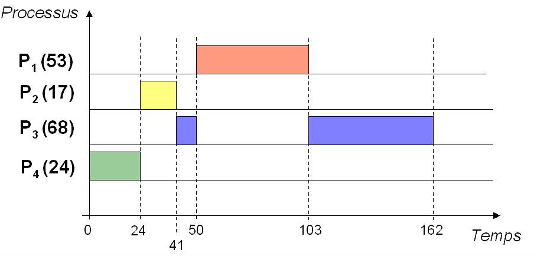

Ordonnancement¶
C'est le système d'exploitation qui attribue aux processus leurs états élu, prêt et bloqué. Plus précisément, c'est l'ordonnanceur (un des composants du système d'exploitation) qui réalise cette tâche appelée ordonnancement des processus.
L'objectif de l'ordonnanceur est de choisir le processus à exécuter à l'instant $t$ (le processus élu) et déterminer le temps durant lequel le processeur lui sera alloué.
Ce choix est à faire parmi tous les processus qui sont dans l'état prêt, mais lequel sera élu ? et pour combien de temps ? Des algorithmes d'ordonnancement sont utilisés et il en existe plusieurs selon la stratégie utilisée. On en présente quelques-uns ci-dessous.
Ordonnancement First Come First Served (FCFS)¶
Principe : Les processus sont ordonnancés selon leur ordre d'arrivée ("premier arrivé, premier servi" en français)
Exemple : Les processus $P_1(53)$, $P_2(17)$, $P_3(68)$ et $P_4(24)$ arrivent dans cet ordre à $t=0$ :
Cela signifie que $P_1$, $P_2$, $P_3$ et $P_4$ ont besoin de respectivement 53, 17, 68 et 24 unités de temps pour s'exécuter.
Ordonnancement Shortest Job First (SJF)¶
Principe : Le processus dont le temps d'exécution est le plus court est ordonnancé en premier.
Exemple : $P_1$, $P_2$, $P_3$ et $P_4$ arrivent à $t=0$ :

Ordonnancement Shortest Remaining Time (SRT)¶
Principe : Le processus dont le temps d'exécution restant est le plus court parmi ceux qui restent à exécuter est ordonnancé en premier.
Exemple : $P_3$ et $P_4$ arrivent à $t=0$ ; $P_2$ à $t=20$ ; $P_1$ à $t=50$ :

Ordonnancement temps-partagé (Round-Robin)¶
Principe : C'est la politique du tourniquet : allocation du processeur par tranche (= quantum $q$) de temps.
Exemple : quantum $q = 20$ et $n = 4$ processus
Dans ce cas, s'il y a $n$ processus, chacun d'eux obtient le processeur au bout de $(n-1)\times q$ unités de temps au plus
Ordonnancement à priorités statiques¶
Principe : Allocation du processeur selon des priorités statiques (= numéros affectés aux processus pour toute la vie de l'application)
Exemple : priorités $(P_1, P_2, P_3, P_4) = (3, 2, 0, 1)$ où la priorité la plus forte est 0 (attention, dans certains systèmes c'est l'inverse : 0 est alors la priorité la plus faible)
✍️ Faites l'exercice 3.